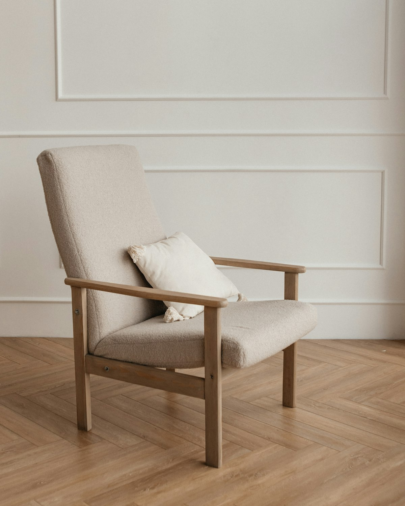

About
Therapy as a shared piece of work
This concept practice is built around a simple idea: people make the most sense in the context of their relationships. Therapy offers a steady place to understand those relationships, including the one you have with yourself.

About the therapist
This section is reserved for the therapist’s own introduction: their name, how they came to this work, the people they most often see, and anything they would like a prospective client to know before getting in touch.
Suggested length: 150–300 words, written in the therapist’s own voice.
Professional photograph provided by the client.
Philosophy
Why a relational approach?
From our earliest years, we learn about closeness through the people around us: whether it is safe to need others, what happens when we are upset, and how much of ourselves we can show. Those lessons are often quiet and automatic, and they can follow us into adult friendships, partnerships and family life.
A relational approach pays attention to those patterns with curiosity rather than judgement. It assumes that the ways we cope usually made sense at some point, and that understanding them is part of finding more room to choose.
For couples, the same lens turns towards the space between partners: the moves each person makes, how those moves affect the other, and the emotions and needs that often sit underneath.
Working together
A collaborative way of working
- Pace. Sessions move at a speed that feels manageable. You decide what you are ready to talk about.
- Transparency. You can ask why a question is being asked, or what a particular approach involves.
- Review. Progress and direction are discussed together, so the work stays connected to what matters to you.
- Respect. Every person and every relationship is different. No single model is applied mechanically.
Credentials
Qualifications and professional standing
To protect clients, this information is shown only once verified with the therapist. Nothing has been assumed for this concept.
Degrees and clinical training, as supplied and confirmed by the therapist.
Professional registration and association memberships, with any relevant EFT training described accurately.
Would you like to talk about working together?
Send a short enquiry and you can ask any questions before deciding.